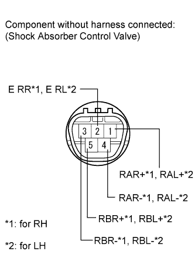

DAMPING FORCE CONTROL ACTUATOR (for Rear Side) > INSPECTION |
| 1. INSPECT REAR SHOCK ABSORBER CONTROL VALVE ASSEMBLY |
 |
Measure the resistance according to the value(s) in the table below.
| Tester Connection | Condition | Specified Condition |
| 1 (RAR+) - 2 (E RR) | Always | 12.0 to 13.6 Ω |
| 3 (RBR-) - 2 (E RR) | ||
| 4 (RAR-) - 2 (E RR) | ||
| 5 (RBR+) - 2 (E RR) |
| Tester Connection | Condition | Specified Condition |
| 1 (RAL+) - 2 (E RL) | Always | 12.0 to 13.6 Ω |
| 3 (RBL-) - 2 (E RL) | ||
| 4 (RAL-) - 2 (E RL) | ||
| 5 (RBL+) - 2 (E RL) |